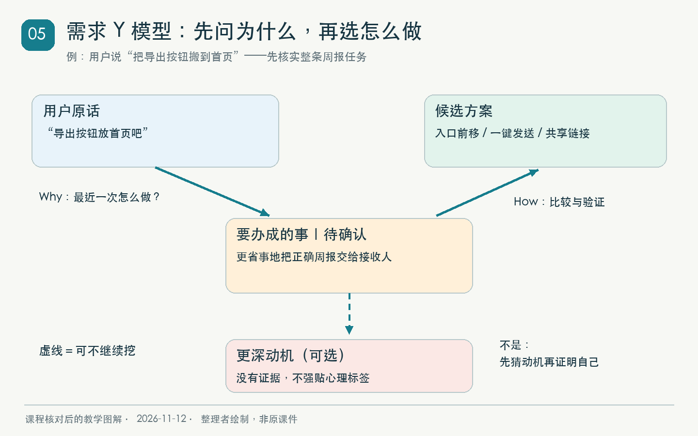

MAP / 先看完整路径
怎样使用
先顺着 1 → 6 看流程，再点击任意步骤进入演示。每步同时看“做什么、留下什么、容易错在哪里、怎样验收”。
流程是便于学习的整理顺序，实际项目可以往返。所有案例、日志和演算均为教学示例，不是你的实际项目成绩。

图为既有笔记的整理者教学示意；本页以操作流程为主。
完整实操 SOP
可以用左右方向键推进。步骤按钮允许回看；没有后台模型调用，演示结束不代表实际验收通过。
CHECK / 先判断，再看解释
用户提出“自动发送周报”，第一步更合适的是？
带走一张实操卡
内容只在当前页，刷新不保存；下载不会提交给老师，也不会改写课程笔记。
ORAL NOTES / 主线外也要记
老师口头补充与游离知识点
- 11/7 PM 01:48:58–01:49:29：问最近一次具体经历。
- 11/7 PM 01:51:32：更深动机可选，不强贴心理标签。
- 10/31 PM 01:31:21–01:41:09：购买者、操作者、受益者可能不同。
- 10/21、11/13点评：新增证据分层与作品交付动态情境；课堂认可不替代真实需求、功能或市场验证。
- 2026-10-18 第一周学习笔记：00:06:10–07:16、12:29–13:47、04:06:03–06:43 / 作业让接收者能打开、看懂、试用；链接可放在说明文档中 / 写入口、核心能力、操作顺序和限制。可访问不意味着必须公开或扩大权限；课堂4/5分是课程评分，不是上线认证
- 2026-10-18 第一周学习笔记：00:08:00–09:46、21:07–24:07 / 定时提醒和立即演示不同；功能需要展示实际行为 / 按钮、音效、提醒、结果气泡分别实际检查。09:17学生说明提醒已做，老师此前的判断不能当最终缺失结论
- 2026-10-18 第一周学习笔记：00:27:43–29:46、32:22 / 追问为什么安装、服务谁；老师补充作业想看AI实用功能 / 动画与情绪价值可以有用，但要连接目标；不能概括成“动画永远不算功能”
- 2026-10-18 第一周学习笔记：00:35:16–37:49、50:14 / 链接权限、下载按钮和工具使用要符合真实能力 / 验收下载文件、提醒触发；简单规则任务不必调用模型。不给无关管理权限，不把未接通机器人写成已实现
- 2026-10-18 第一周学习笔记：00:55:29–55:41、58:08、01:08:47–09:36 / 加载、贴图边缘、响应式布局也是交付质量 / 慢的原因先测；检查桌面与手机、窄屏、可读性。老师对图片过大或网络的判断是排查假设
- 2026-10-18 第一周学习笔记：01:20:35、01:25:47–28:51 / 练习方法能迁移到自己的题材和作品 / 不要求人人复刻同一物件；审美认可不证明市场需求、销量或付费意愿
- 2026-10-18 第一周学习笔记：01:32:00、01:46:26–47:19 / 默认视角和接收者环境要可用，必要时准备演示兜底 / 不能让观众自行猜正确灯光/角度；录屏辅助说明，不能代替真实功能验收
- 2026-10-18 第一周学习笔记：02:00:08、02:08:29–12:09 / 讲清用户、场景、需求、功能，并追问提供者、付费方、成本与价值 / 2–3分钟是该轮汇报限制；预算例子不是所有项目起步金额。使用者、受益者和付款者分别列
- 2026-10-18 第一周学习笔记：02:21:24–22:43、02:34:27–38:45 / 把宠物选码、评价回复等功能放回经营目标 / 少退货、提高决策效率等是待验证收益；比较机会成本，不能只因“能自动回复”就认定值得投入
- 2026-10-18 第一周学习笔记：02:47:14–48:17、02:51:39–54:59 / 热点的关联性、时效性，及平台资源/获客能力都要考虑 / 曝光不等于转化；没有平台资源就先缩小场景，不套用大平台分发能力
- 2026-10-18 第一周学习笔记：02:56:30–03:00:39、03:12:22–14:34 / 评论工具与家居工具要考虑数据入口、用户角色、渠道和费用 / 核接口与授权可用性；评论应保留影响决策的正反信息，不能把偏向商家的删差评做法当通则
- 2026-10-18 第一周学习笔记：03:15:01–17:31、03:23:19–25:03 / 有竞品不等于不能做；要解释自己的选择 / 多方产品可同时服务商家和买家，需确定本期主要任务与付款关系，不机械写“只能选B或C”
- 2026-10-18 第一周学习笔记：03:57:06–57:35、04:03:42–04:04:00、04:16:34–17:43 / 熟悉业务的人可从小痛点切入；继续考虑获客和转化；先做再改 / 课堂肯定的是思考/进展，不等于产品或商业模式已验证
- 2026-11-07 需求分析与用户访谈：17:38–23:52 / 竞品2.0重点是我们据此怎么做，还要看缺点/失败经验；有限时间抓汇报框架 / 目标与决定→关键证据→借鉴/避坑→本期方案与验证；背景资料放附录，不压掉核心判断
- 2026-11-07 需求分析与用户访谈：20:57–22:35 / 出海不只看产品能不能做，也要查记忆、数据存储及地区差异 / 形成地区×数据类型×处理目的×保存/删除×依据的待核表。老师“中国可存ASR但不可存原音频”等概括未获一手核准，不作为法律规则
- 2026-11-07 需求分析与用户访谈：41:04–43:39、44:52–48:22 / “专业、记忆好”须有具体测试；销售说好不等于实测好；无法试用要调整研究路径 / 记忆拆成写入准确、取回准确、更新冲突与删除失效；授权试用、可操作演示或公开证据各标层级。无权限≠不支持≠实测失败
- 2026-11-07 需求分析与用户访谈：43:02–43:39、47:23、01:02:19–02:31 / 文档层级过多影响理解 / 主文保留任务、对比结论、证据和决策，详细资料入附录；层级数量依内容，不机械固定
- 2026-11-07 需求分析与用户访谈：01:01:47–02:15 / 营销组把竞品优缺点接到自己的Demo，是有价值的分析 / 参考“发现→取舍→方案→验证”，不是只有一张功能清单；老师认可不等于测试全部可靠
- 2026-11-07 需求分析与用户访谈：01:25:51–27:08 / 轮流汇报可以练表达，但每个人要熟悉内容和结构 / 先讲清竞品，再综合推导自己的方案；不要来回切换指代，让听众猜“它”是哪家
- 2026-11-07 需求分析与用户访谈：01:31:56–34:09 / 需求访谈、竞品分析和Demo要连起来；每次汇报带上前一阶段成果 / 标哪些决定来自用户问题，哪些因竞品证据修订，哪些还是假设；不是每次把旧材料全部重讲
沿用已核笔记的来源定位。本次没有重新回听音频；前两周口头内容部分依据录音整理纪要，不冒称逐字原话。完整语境、更多知识点和未核项见下方正文。
来源与公开范围
公开版来源与阅读边界 ↗公开版来源与阅读边界 ↗公开版来源与阅读边界 ↗本页是按任务重组的学习视图；课程语境见按日期归档的笔记；独立正确性核查见上方《权威来源知识核查》，不要用课程笔记本身证明知识正确。平台参数与规则使用前再核。